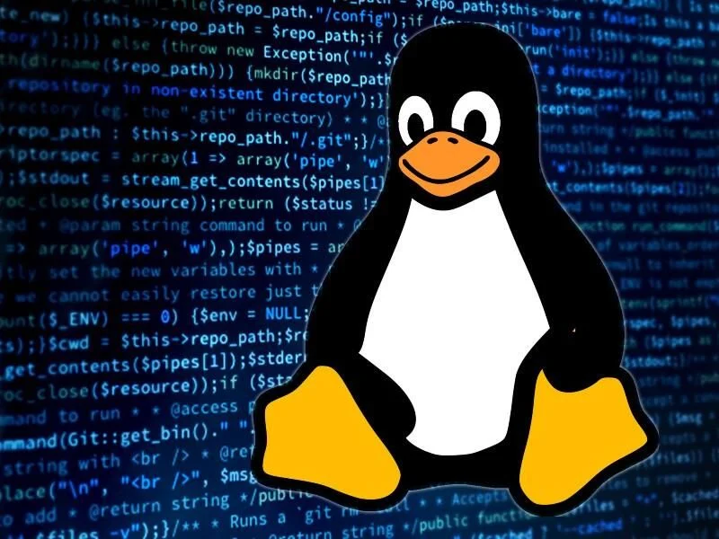

Mes Compétences
Techniques Réseaux
- Configuration et administration de réseaux locaux (LAN, VLAN, routage statique/dynamique, OSPF).
- Mise en place de services réseau (DHCP, DNS, NAT, serveur Web).
- Sécurisation des réseaux (pare-feu, VPN, filtrage, DMZ).

Systèmes
- Administration de systèmes Linux (gestion utilisateurs, sécurité, scripts).
- Virtualisation et usage de machines virtuelles
Développement
- Programmation réseau (Python, scripts Bash, PHP pour services web).
- Bases de développement web et bases de données (SQL).
Gestion de projet
- Rédaction de documentation technique (rapports, cahier des charges).
- Travail en mode projet (méthodologie SMART, gestion d’équipe).
- Conduite de tests, diagnostic et résolution d’incidents.